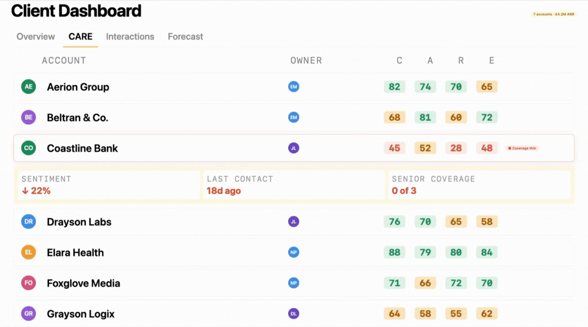
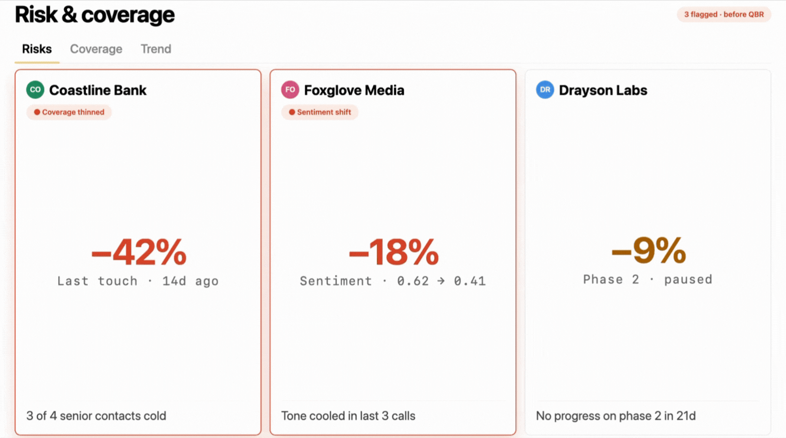
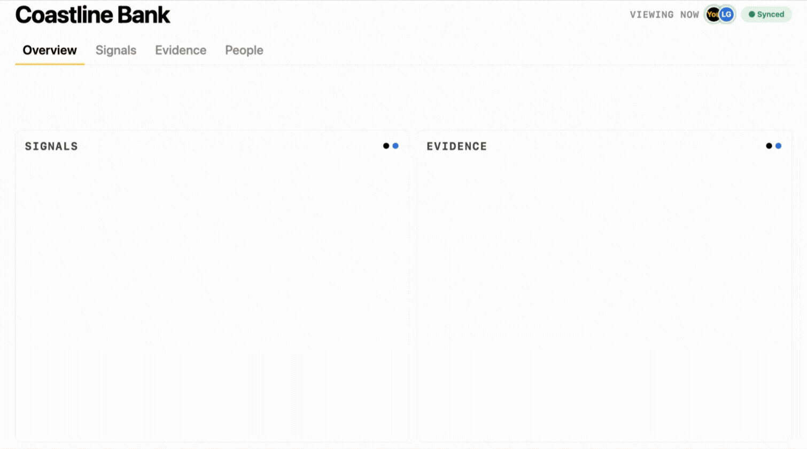

FOR · CLIENT SERVICE DIRECTOR
Run your portfolio with eyes open.
Onboard new team members in days. Catch dissatisfaction before the renewal call. See the patterns across your portfolio that no individual AM can spot alone.
We have a target of achieving 20% better efficiency across the business. 20% less time spent on administration. Kaizan has significantly helped us achieve that target.
Derek Grant
VP Operations & General Manager UK / US
Tradedoubler
Why client service directors love Kaizan
The things Client Service Directors love.
01
Onboard new team members in days, not months.
Every client's history - meetings, decisions, stakeholders, context - searchable from day one. New joiners are useful immediately instead of spending a quarter getting up to speed.
02
Proactive risk alerts.
Kaizan flags client dissatisfaction, slipping sentiment, and emerging issues across the portfolio - so you intervene before the conversation where they tell you it's over.
03
Patterns across the portfolio.
Pricing pushback on three clients, scope creep on four, the same stakeholder concern in two - themes your team can't see one account at a time.
04
AI Helpers watching the portfolio while you sleep.
Risk signals collected overnight, the morning briefing ready before standup, the team primed on what needs attention - without you having to assemble the meeting yourself.
How Kaizan helps
The whole portfolio on one page - ready for the conversation with your team, not over their shoulder.
01
Portfolio dashboard
Every account in the team’s book, scored across CARE. Click any row for the conversations, contacts and signals underneath.

02
Risk and coverage
Accounts where coverage has thinned, sentiment has shifted or expansion threads have gone cold - flagged before the QBR.

03
Shared client view
You and your AMs see the same picture of every account - same scores, same signals, same evidence. Standups stop being status theatre and start being decisions.

FAQs
The questions client service directors ask us.
How quickly can a new starter get up to speed on a client they’ve never worked on?
From day one. Every meeting, decision, stakeholder and commitment on the account is searchable, with summaries on demand. Most directors tell us a new joiner contributes meaningfully inside their first week instead of the usual quarter.
How does Kaizan know when a client is unhappy - what signals does it use?
Kaizan reads across the full conversational record - meetings, email and chat - for sentiment shifts, escalation language, stakeholder withdrawal and slipping commitment cadence. Risk signals surface on each client with the underlying evidence, so you act on context rather than a score in isolation.
Can we tune what counts as a risk for our business?
Risk thresholds, signals and weightings are configurable to your portfolio. We calibrate during rollout so alerts match how your team actually thinks about account health - not a generic model.
How does it handle sensitive conversations - an AM venting, an internal disagreement?
Internal conversations stay internal. Permissions, redaction rules and workspace boundaries are configurable so sensitive content doesn't surface outside the people it's meant for, and there are explicit controls for excluding 1:1s and team-only meetings.
Not quite you?